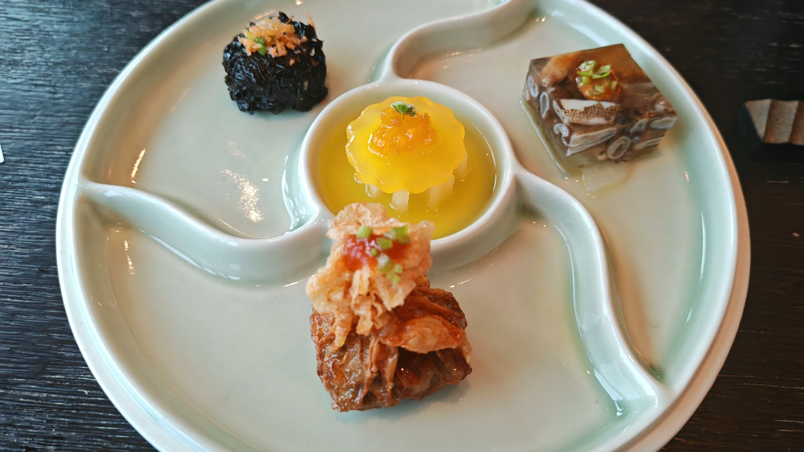

2026-09-22
记录一下最近吃过的好吃的
声明：这不是一个严谨的美食评测栏目，主要是为了安放一些我对食物的记忆，记录吃饭的感受而已。我对美食的评价原则是：食物的口味>性价比>环境>服务>食物外形，每个餐厅也会从这几个维度简单的评价一下。记录的餐厅没有限制，只要是给我留下深刻印象的都会放（当然是好的印象为主，因此也可以视为一个美食推荐栏目）

声明：这不是一个严谨的美食评测栏目，主要是为了安放一些我对食物的记忆，记录吃饭的感受而已。我对美食的评价原则是：食物的口味>性价比>环境>服务>食物外形，每个餐厅也会从这几个维度简单的评价一下。记录的餐厅没有限制，只要是给我留下深刻印象的都会放（当然是好的印象为主，因此也可以视为一个美食推荐栏目）